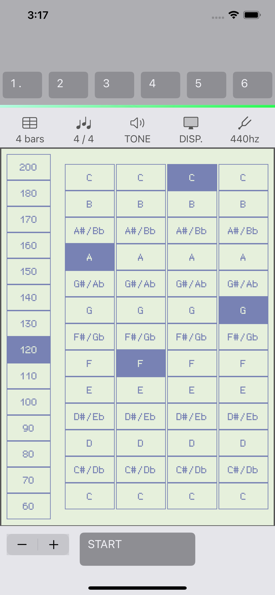

English / 日本語
4 bars Metronome
4 bars Metronomeについて
4 bars Metronome（フォーバースメトロノーム）は、4小節のベース音を再生するメトロノームです。
簡単な操作ですぐにジャムセッションをおこなうことができます。



主な機能
・ベース音を再生するメトロノーム
・小節数の切り替え機能（4小節 / 8小節）
・BPM切り替え機能（最小40、最大250）
・基準ピッチ切り替え機能（440hz、442hz）
・音色切り替え機能
・設定切り替え機能
動作環境
本ソフトウェアはiPhone, iPadで動作するアプリケーションです。
対応OS：
・iOS 16.4 -
入手先
その他
・4 bars Metronomeの著作権はyamahito softwareが保有しています。
バージョン履歴
・2023/06/18 Ver1.0 初期リリース
・2023/06/18 Ver1.1 App Storeページを修正
Web: https://yamahito-software.github.io/docs/
Mail:
Copyright 2023 yamahito software